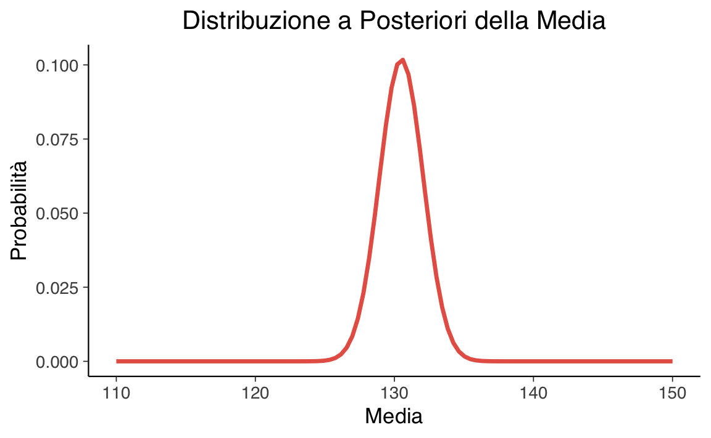
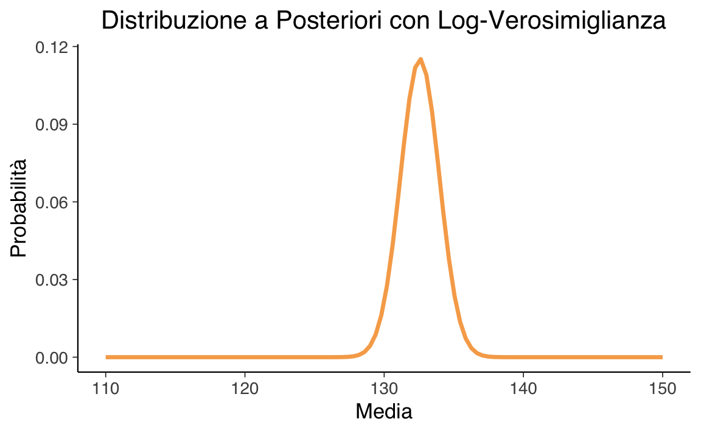

here::here("code", "_common.R") |>
source()
# Load packages
if (!requireNamespace("pacman")) install.packages("pacman")
pacman::p_load(reshape2, )
Your package installedWarning in pacman::p_load(reshape2, ): Failed to install/load:Prerequisiti
Concetti e Competenze Chiave
Preparazione del Notebook
here::here("code", "_common.R") |>
source()
# Load packages
if (!requireNamespace("pacman")) install.packages("pacman")
pacman::p_load(reshape2, )
Your package installedWarning in pacman::p_load(reshape2, ): Failed to install/load:In questo capitolo, estenderemo la discussione precedente sul calcolo della distribuzione a posteriori utilizzando il metodo basato su griglia, applicandolo questa volta a un caso con verosimiglianza gaussiana. In particolare, ci concentreremo su come costruire un modello gaussiano per descrivere l’intelligenza.
Immaginiamo di condurre uno studio sulla plusdotazione, considerando l’approccio psicometrico. Secondo questo approccio, una persona è considerata plusdotata se ha un QI (Quoziente Intellettivo) di 130 o superiore (Robinson, Zigler, & Gallagher, 2000). Anche se l’uso di un QI di 130 come soglia è il criterio più comune, non è universalmente accettato. L’intelligenza nei bambini plusdotati non è solo superiore rispetto a quella dei loro pari, ma è qualitativamente diversa (Lubart & Zenasni, 2010). I bambini plusdotati tendono a mostrare caratteristiche come un vocabolario ampio, un linguaggio molto sviluppato, processi di ragionamento avanzati, eccellente memoria, vasti interessi, forte curiosità, empatia, capacità di leadership, abilità visive elevate, impegno in situazioni sfidanti e un forte senso di giustizia (Song & Porath, 2005).
Nella simulazione che seguirà, assumeremo che i dati provengano da una distribuzione normale. Per semplicità, considereremo che la deviazione standard sia nota e pari a 5. Il parametro della media sarà l’oggetto della nostra inferenza.
Supponiamo di avere un campione di 10 osservazioni. I dati saranno generati casualmente da una distribuzione normale con media 130 e deviazione standard 5.
set.seed(123) # Per la riproducibilità
vera_media <- 130 # Media vera
sigma_conosciuta <- 5 # Deviazione standard conosciuta
dimensione_campione <- 10 # Dimensione del campione
# Generare un campione
campione <- round(rnorm(n = dimensione_campione, mean = vera_media, sd = sigma_conosciuta))
campione
#> [1] 127 129 138 130 131 139 132 124 127 128Creiamo ora una griglia di 100 valori compresi tra 110 e 150.
mu_griglia <- seq(110, 150, length.out = 100)
mu_griglia
#> [1] 110.0000 110.4040 110.8081 111.2121 111.6162 112.0202 112.4242 112.8283
#> [9] 113.2323 113.6364 114.0404 114.4444 114.8485 115.2525 115.6566 116.0606
#> [17] 116.4646 116.8687 117.2727 117.6768 118.0808 118.4848 118.8889 119.2929
#> [25] 119.6970 120.1010 120.5051 120.9091 121.3131 121.7172 122.1212 122.5253
#> [33] 122.9293 123.3333 123.7374 124.1414 124.5455 124.9495 125.3535 125.7576
#> [41] 126.1616 126.5657 126.9697 127.3737 127.7778 128.1818 128.5859 128.9899
#> [49] 129.3939 129.7980 130.2020 130.6061 131.0101 131.4141 131.8182 132.2222
#> [57] 132.6263 133.0303 133.4343 133.8384 134.2424 134.6465 135.0505 135.4545
#> [65] 135.8586 136.2626 136.6667 137.0707 137.4747 137.8788 138.2828 138.6869
#> [73] 139.0909 139.4949 139.8990 140.3030 140.7071 141.1111 141.5152 141.9192
#> [81] 142.3232 142.7273 143.1313 143.5354 143.9394 144.3434 144.7475 145.1515
#> [89] 145.5556 145.9596 146.3636 146.7677 147.1717 147.5758 147.9798 148.3838
#> [97] 148.7879 149.1919 149.5960 150.0000Per ogni valore della griglia, calcoliamo la verosimiglianza complessiva come prodotto delle densità di probabilità.
likelihood <- sapply(mu_griglia, function(mu) {
prod(dnorm(campione, mean = mu, sd = sigma_conosciuta))
})
likelihood
#> [1] 5.288265e-50 1.406074e-48 3.502225e-47 8.171857e-46 1.786234e-44
#> [6] 3.657602e-43 7.016097e-42 1.260769e-40 2.122346e-39 3.346861e-38
#> [11] 4.944244e-37 6.842315e-36 8.870476e-35 1.077288e-33 1.225624e-32
#> [16] 1.306242e-31 1.304159e-30 1.219772e-29 1.068728e-28 8.771964e-28
#> [21] 6.744771e-27 4.858233e-26 3.278161e-25 2.072159e-24 1.227034e-23
#> [26] 6.806612e-23 3.537091e-22 1.721877e-21 7.852337e-21 3.354568e-20
#> [31] 1.342502e-19 5.033084e-19 1.767641e-18 5.815606e-18 1.792407e-17
#> [36] 5.175103e-17 1.399724e-16 3.546552e-16 8.418043e-16 1.871789e-15
#> [41] 3.898910e-15 7.608000e-15 1.390716e-14 2.381483e-14 3.820297e-14
#> [46] 5.741000e-14 8.082000e-14 1.065837e-13 1.316752e-13 1.523904e-13
#> [51] 1.652160e-13 1.677982e-13 1.596480e-13 1.422920e-13 1.188059e-13
#> [56] 9.292587e-14 6.808884e-14 4.673649e-14 3.005225e-14 1.810251e-14
#> [61] 1.021507e-14 5.399888e-15 2.674046e-15 1.240492e-15 5.390880e-16
#> [66] 2.194655e-16 8.369771e-17 2.990211e-17 1.000762e-17 3.137622e-18
#> [71] 9.215336e-19 2.535494e-19 6.535139e-20 1.577930e-20 3.569124e-21
#> [76] 7.562690e-22 1.501176e-22 2.791438e-23 4.862561e-24 7.934926e-25
#> [81] 1.213002e-25 1.737085e-26 2.330351e-27 2.928616e-28 3.447817e-29
#> [86] 3.802480e-30 3.928533e-31 3.802198e-32 3.447306e-33 2.927964e-34
#> [91] 2.329659e-35 1.736441e-36 1.212462e-37 7.930807e-39 4.859676e-40
#> [96] 2.789575e-41 1.500063e-42 7.556522e-44 3.565949e-45 1.576410e-46Impostiamo una prior uniforme e calcoliamo la distribuzione a posteriori normalizzata.
prior <- rep(1, length(mu_griglia)) # Prior uniforme
posterior_non_norm <- likelihood * prior
posterior <- posterior_non_norm / sum(posterior_non_norm) # NormalizzazioneVisualizzazione:
plot(mu_griglia, posterior,
type = "l", main = "Distribuzione a Posteriori della Media",
xlab = "Media", ylab = "Probabilità"
)
Usiamo una prior gaussiana con media 140 e deviazione standard 3.
prior <- dnorm(mu_griglia, mean = 140, sd = 3)
posterior_non_norm <- likelihood * prior
posterior <- posterior_non_norm / sum(posterior_non_norm)
# Grafico
plot(mu_griglia, posterior,
type = "l", col = "blue", lwd = 2,
main = "Distribuzione a Posteriori e Prior della Media",
xlab = "Media", ylab = "Densità"
)
lines(mu_griglia, prior / sum(prior), col = "red", lty = 2)
legend("topright", legend = c("Posterior", "Prior"), col = c("blue", "red"), lty = c(1, 2))Generiamo un campione dalla distribuzione a posteriori.
set.seed(123)
indice_campionato <- sample(1:length(mu_griglia), size = 1000, replace = TRUE, prob = posterior)
media_campionata <- mu_griglia[indice_campionato]
# Istogramma dei campioni
hist(media_campionata,
main = "Campionamento dalla Posterior", xlab = "Media",
breaks = 20, col = "lightblue", border = "white"
)
# Media e intervallo di credibilità
mean(media_campionata)
#> [1] 132.5737
quantile(media_campionata, c(0.03, 0.97))
#> 3% 97%
#> 130.2020 135.4545
Utilizziamo i logaritmi per migliorare la stabilità numerica.
log_likelihood <- sapply(mu_griglia, function(mu) {
sum(dnorm(campione, mean = mu, sd = sigma_conosciuta, log = TRUE))
})
log_prior <- dnorm(mu_griglia, mean = 140, sd = 3, log = TRUE)
log_posterior_non_norm <- log_likelihood + log_prior
log_posterior <- log_posterior_non_norm - max(log_posterior_non_norm) # Stabilizzazione
posterior <- exp(log_posterior) / sum(exp(log_posterior))
# Grafico
plot(mu_griglia, posterior,
type = "l", col = "darkgreen", lwd = 2,
main = "Distribuzione a Posteriori con Log-Verosimiglianza",
xlab = "Media", ylab = "Probabilità"
)
Per una griglia bidimensionale di valori di \(\mu\) e \(\sigma\):
# Define the grid for mu and sigma
mu_griglia <- seq(110, 150, length.out = 100)
sigma_griglia <- seq(1, 10, length.out = 50)
# Create combinations of mu and sigma using expand.grid
grid <- expand.grid(mu = mu_griglia, sigma = sigma_griglia)
# Compute the log-likelihood for each combination of mu and sigma
log_likelihood <- apply(grid, 1, function(params) {
mu <- params[1]
sigma <- params[2]
sum(dnorm(campione, mean = mu, sd = sigma, log = TRUE))
})
# Reshape log-likelihood into a matrix
log_likelihood_2d <- matrix(log_likelihood, nrow = length(mu_griglia), ncol = length(sigma_griglia))
# Compute priors for mu and sigma
log_prior_mu <- dnorm(mu_griglia, mean = 140, sd = 5, log = TRUE)
log_prior_sigma <- dnorm(sigma_griglia, mean = 5, sd = 2, log = TRUE)
# Combine priors into a grid
log_prior_2d <- outer(log_prior_mu, log_prior_sigma, "+")
# Compute log-posterior
log_posterior_2d <- log_likelihood_2d + log_prior_2d
log_posterior_2d <- log_posterior_2d - max(log_posterior_2d) # Stabilize
posterior_2d <- exp(log_posterior_2d)
posterior_2d <- posterior_2d / sum(posterior_2d) # Normalize
# Convert posterior_2d to a data frame for visualization
library(reshape2)
posterior_df <- melt(posterior_2d)
names(posterior_df) <- c("mu_idx", "sigma_idx", "posterior")
posterior_df$mu <- mu_griglia[posterior_df$mu_idx]
posterior_df$sigma <- sigma_griglia[posterior_df$sigma_idx]
# Plot the posterior distribution
library(ggplot2)
ggplot(posterior_df, aes(x = mu, y = sigma, fill = posterior)) +
geom_tile() +
scale_fill_viridis_c() +
labs(
title = "Distribuzione a Posteriori Bidimensionale",
x = "Media ($\\mu$)", y = "Deviazione Standard ($\\sigma$)"
)
Quando si passa alla stima simultanea di più parametri, come la media (\(\mu\)) e la deviazione standard (\(\sigma\)), l’analisi diventa notevolmente più complessa. Questo perché occorre considerare un numero molto maggiore di combinazioni di parametri rispetto alla stima di un solo parametro, aumentando così il carico computazionale. Inoltre, la scelta delle priors per ciascun parametro richiede particolare attenzione, poiché queste influenzeranno in modo diretto le stime a posteriori.
In scenari dove lo spazio dei parametri è multidimensionale o quando l’esplorazione della griglia diventa impraticabile, l’uso di metodi avanzati come il campionamento di Markov Chain Monte Carlo (MCMC) diventa indispensabile. Questi metodi permettono di campionare in modo efficiente dalla distribuzione a posteriori, senza la necessità di esplorare esplicitamente ogni combinazione possibile di parametri, rendendo l’analisi più gestibile anche in contesti complessi.
In conclusione, l’estensione dell’approccio bayesiano a problemi con più parametri sconosciuti richiede un’attenzione ancora maggiore nella definizione dello spazio dei parametri, nella selezione delle priors appropriate e nel calcolo delle distribuzioni a posteriori. L’adozione di tecniche come l’MCMC può facilitare questo processo, permettendo di affrontare in modo efficiente problemi che altrimenti sarebbero proibitivi dal punto di vista computazionale.
sessionInfo()
#> R version 4.4.2 (2024-10-31)
#> Platform: aarch64-apple-darwin20
#> Running under: macOS Sequoia 15.1.1
#>
#> Matrix products: default
#> BLAS: /Library/Frameworks/R.framework/Versions/4.4-arm64/Resources/lib/libRblas.0.dylib
#> LAPACK: /Library/Frameworks/R.framework/Versions/4.4-arm64/Resources/lib/libRlapack.dylib; LAPACK version 3.12.0
#>
#> locale:
#> [1] C/UTF-8/C/C/C/C
#>
#> time zone: Europe/Rome
#> tzcode source: internal
#>
#> attached base packages:
#> [1] stats graphics grDevices utils datasets methods base
#>
#> other attached packages:
#> [1] reshape2_1.4.4 MASS_7.3-61 viridis_0.6.5 viridisLite_0.4.2
#> [5] ggpubr_0.6.0 ggExtra_0.10.1 gridExtra_2.3 patchwork_1.3.0
#> [9] bayesplot_1.11.1 psych_2.4.6.26 scales_1.3.0 markdown_1.13
#> [13] knitr_1.49 lubridate_1.9.3 forcats_1.0.0 stringr_1.5.1
#> [17] dplyr_1.1.4 purrr_1.0.2 readr_2.1.5 tidyr_1.3.1
#> [21] tibble_3.2.1 ggplot2_3.5.1 tidyverse_2.0.0 rio_1.2.3
#> [25] here_1.0.1
#>
#> loaded via a namespace (and not attached):
#> [1] gtable_0.3.6 xfun_0.49 htmlwidgets_1.6.4 rstatix_0.7.2
#> [5] lattice_0.22-6 tzdb_0.4.0 vctrs_0.6.5 tools_4.4.2
#> [9] generics_0.1.3 parallel_4.4.2 fansi_1.0.6 pacman_0.5.1
#> [13] pkgconfig_2.0.3 lifecycle_1.0.4 compiler_4.4.2 farver_2.1.2
#> [17] munsell_0.5.1 mnormt_2.1.1 carData_3.0-5 httpuv_1.6.15
#> [21] htmltools_0.5.8.1 yaml_2.3.10 Formula_1.2-5 car_3.1-3
#> [25] pillar_1.9.0 later_1.4.0 abind_1.4-8 nlme_3.1-166
#> [29] mime_0.12 tidyselect_1.2.1 digest_0.6.37 stringi_1.8.4
#> [33] labeling_0.4.3 rprojroot_2.0.4 fastmap_1.2.0 grid_4.4.2
#> [37] colorspace_2.1-1 cli_3.6.3 magrittr_2.0.3 utf8_1.2.4
#> [41] broom_1.0.7 withr_3.0.2 backports_1.5.0 promises_1.3.1
#> [45] timechange_0.3.0 rmarkdown_2.29 ggsignif_0.6.4 hms_1.1.3
#> [49] shiny_1.9.1 evaluate_1.0.1 miniUI_0.1.1.1 rlang_1.1.4
#> [53] Rcpp_1.0.13-1 xtable_1.8-4 glue_1.8.0 jsonlite_1.8.9
#> [57] plyr_1.8.9 R6_2.5.1